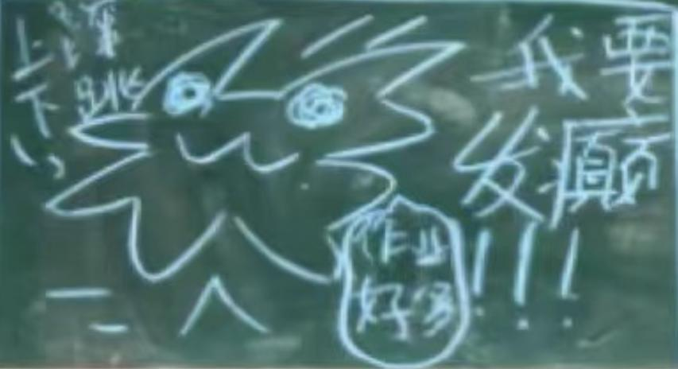
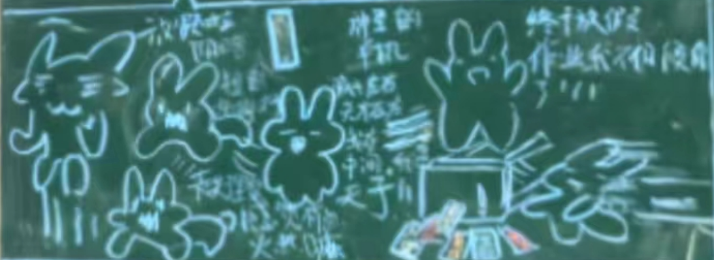

日志
这里记录了同学们每天的日常。
点击“”可快速跳转至目标月份；粉色字体表示的为重要事件。
2024年9月
上午跳闸6次（升旗时占四次。当时领导演讲时跳闸，几人赶紧搬音响，第四次跳闸时讲话那人自动“无缝衔接”，用起备用音响）
语文换老师：“怎么突然变老了？”
学生郑炜玻璃杯不慎摔碎，郑炜作死玩玻璃渣时手流血。
学生林奕扬用夹子夹嘴、鼻子。
学生蒲林豪流口水事件。
学生王淮作文：“…………福州首都北京…………”
学生蒲林豪第二次流口水。
语文语文老师发行“防伪标志”：即在默写文字中穿插两个符号以防止提前默写，如：“客路青山外”
语文老师将“陈睿卓”念成“陈睿zhuō”；把“薛阅晨”念成“xiāo阅晨”。
学生午休时林奕扬将外套套在书包（书包放桌上）外面，并用语文书将帽子撑起，做成人上半身的样子。随后给大家展示自己摸（还把拉链拉开摸）那个假人的胸部以及生殖器官（甚至还吻、扯），体育老师发现后将外套扯下来。
教室门外贴着的考生名单中出现日本人名“中岛隆骏”被学生调侃“日本人考语文。”
冷知识：中岛隆骏，原名郑隆俊，福州市东升小学2018级1班学生，外号有“日本畸形胎”、“潮流王八”、“耐克哥”等。喜欢装逼，每天都穿一身耐克，学生表示“身上的勾比卷子上的还多”。
语文语文老师播放课文朗读时出现早读铃声背景音
音乐音乐老师课件中出现“脏乱差”图片时同学们都说：“蒲林豪家！”；出现婚礼相关图片时同学们说“林芷琪和郑致辰！”。
生物林奕扬被称“2B青年欢乐多”。
学生郑致辰“强奸”蔡华楷。
蒲林豪钻进装班服的纸箱。
林芷琪抢林奕杨筷子被班主任找。
蒲林豪把刚发下来的班服当裤子穿，本人：“新时尚。”
量化（左：排名；中：姓名；右：奖/罚）第？周
江允儿 打球
廖成羲 开合跳100下
英语英语老师：“我真的想说他脑子进水了！……”
学生郑炜换座后被女生围住，本人表示“很高兴”。
眼保健操时有人离开教室被扣26分，被班主任留下并罚写说明
林芷琪表示：初三毕业请全班吃蛋糕。
数学数学老师讲评作业时，展台上的计算题过程错、答案对，被数学老师评价：“你这是错错得对啊。”
蒲林豪考试时玩勺子。数学老师：“还，还照镜子啊？过来。”然后将蒲林豪双手各打一下并没收勺子。
考试时薛阅晨“喵喵喵”。
语文新梗：“金叵罗”。
学生蒲林豪饭粒掉到凳子、桌布上。
自习时外面操场有人打鼓，王淮：“谁在敲桌子？”
学生薛阅晨：“喝蜜蜂……”
蒲林豪玩垃圾袋
唐家祺因多嘴被英语老师打10下。
学生班级热搜榜中出现：“依诺：宝宝（林芷琪）好快！”后被杨依诺擦掉。 
获奖情况
孔祥懿获初一女子组800m第一名
郑锦熠获初一男子组1000m第四名
陈睿卓获初一男子组跳高第四名
郑诗语获初一女子组跳远第六名
倪浩宇获初一男子组跳高第八名
班级热搜榜
#爆# 郑锦熠100m竟跑了全年级第4！！！我的天！好快呀！（作者赞过）
就是啊，好厉害！
……更多
#爆# 孔祥懿800m全年级第1！！！
#爆# 陈睿卓跳高年级第4！！！
#爆# 班主任Miss.Liu竟亲自陪跑！！啊！！！我爱您老师！！！（作者赞过）
同上！！！
老师超敬业的好吧！又是爱老师的一天（作者赞过）
老师评论：爱你们（作者赞过）
#爆# 震惊！林芷琪800m全组第三！！！杨依诺：好快！！！（作者赞过）
芷琪：有吗？嘻嘻！！！
钰颖：（回复芷琪）好厉害呀！
#爆# 全班同学近期精神状态如下图
诗语：我的妈呀！！！绝美！！（作者赞过）
作者亲启：哈哈哈！！！
学生快放学时蒲林豪因拿起书包被班主任罚站。 
午托将近时班主任让大家不要到处“要饭”，大家都说：“虽然没有提到‘林奕扬’三字，但句句都在说林奕扬。”
运动会闭幕式领导宣读国庆注意事项，同学们不耐烦时突然下大雨。
趣味运动会时学生表示想看地理老师玩。
获奖情况
杨依诺获初一女子组100米第二名
孔祥懿获初一女子组400米第三名
林芷琪获初一女子组100米第6名
入场式评比一等奖
团体总分第四名
班级热搜榜
#爆 郑锦熠400米本组第一！！！
#爆 林芷琪100米小组第一！！！
#爆 孔祥懿喜获金、铜双奖！！！钰颖：真厉害！！！
沁诗：好牛！！！
诗语：天哪！！！（作者赞过）
允儿：好棒啊（作者赞过）
桂芳：好！！作者亲启：啊哈哈哈
#爆 今日班级精神状态be like：
#爆 季仁槿要吃免费冰淇淋！！！（不要7.5，只要一个季仁槿）
#爆 季仁槿要谋权篡位当英语老师！！
季仁槿：我当网红了！
那~咋~了~（作者赞过）
雨晴：我来吃冰淇淋
#爆 杨依诺和林芷琪进决赛！
#爆 放假前夕，同学逐渐癫狂！！！！！
2024年10月
英语英语老师在隔壁班讲话，声音通过麦克风被同学们听见。
林奕扬、叶弘毅、蒲林豪、郑炜头发不合格被班主任“理发”，每人都秃了一块。
语文课上有人电子设备响铃，大课间班主任占用20分钟查明真相。
学生林奕扬吃腰带（并表演杂技）、矿泉水瓶封圈。
蔡华楷、郑炜等人将“高级玩家”简称为“高玩（睾丸）”。
量化第四周
郑诗语 抵未交作业1天。
孔祥懿 一人值日一天。
蒲林豪 抄数学学过的全部公式10遍
第五周
孔祥懿 体验任意课代表1天
林奕扬 （未抽罚……）抽奖制度改为“前3名、后3名抽”。
地理地理老师称等高线地形图中的陡崖为“八戒的钉耙”。
地理老师将“学委”说成“zhé委”。
政治郑诗语先后和蒲林豪（要单打独斗）和郑致辰（被其他人坑）上台答题。
学生语文课代表把“从百草园到三味书屋”成称为“三只松鼠”。
蒲林豪将腿蜷缩到衣服里面，被调侃“巨乳”“怀孕”。
语文课上林奕扬用餐巾纸做“榴莲千层”（即把餐巾纸叠起来并在纸张间留出空隙）。
数学课件中出现“绿化队今年植树约2棵”、“某区在校中学生约75人”。
课上蒲林豪、林奕扬被罚站，林奕扬将矿泉水瓶盖子挖孔并用此孔喝水，被称“喝尿”；故意敲自己的铁碗发出声音，被数学老师发现后狡辩“不小心掉在地板上”；用（两侧空心）笔杆吹刺耳的声音被数学老师打手，且第一次打时躲避导致打到桌子上。
美术美术老师被人称“跟地理老师一样是超雄……”。
郑致辰：“美术课代表上来领读！”
课上搞笑事件不断，美术老师说出以下名言：
牛叉！
有点变态。
看（女生）够了没？
你也得了这个后视症啊！
（林奕扬说自己请假）没来你又没有死了！
他的眼睛看上去充满了期待。
（林奕扬画画难看）我看你不是做完了，你是人完了！
我还以为你右边（女生）看腻了，开始看后面。
要是你们家婴儿哭的话，把这张作业（狮子素描图）拿出来，立马就不哭了，还能避邪啊！
（林奕扬）不要创造新物种。
……
有人被罚转圈20下。
学生大课间被人告知要跑操，出去后发现只有初三要跑。
林奕扬把“华威菜多多”保温箱上的密封条撕下来，发现上面写着“红烧冬瓜、蒜香金针菇、闽南姜母鸭、么么脆鸡排、高汤鱼丸”几样菜品，其中“么么脆鸡排”被学生大肆调侃。
体育课上蒲林豪称自己很虚，要报跆拳道。
语文背《从百草园到三味书屋》时，学生：“……肥胖的黄丰（黄蜂）泽伏在蔡华（菜花）楷上……”
学生林奕扬把纸涂黑贴到牙齿上。
蒲林豪午休时流口水（梅开三度）并拉丝，学生将黑笔放到他的嘴下面、将红笔放在他耳朵上后惊醒蒲林豪。
英语下课后英语老师检查未预习英语书者的记作业本，发现未抄后每人打5下左右。随后让全班回教室统一检查记作业本并不允许第三节下课。
英语老师骂学生：“脑子是不是被门夹了！”
午托午休时林奕扬让人绑自己手，体育老师发现后被没收带子。林奕扬就开始转圈，转完后倒地。后又从体育老师身后偷偷爬过去拿那条带子被打屁股、扣2分。
午托时学生争吵背历史还是地理，林奕扬询问英语老师“今天背什么”，英语老师回答今天作业要背的单词，林奕扬回班相告，学生开始背英语，背了半个中午，当英语老师进班时才发现背错了。
学生蒲林豪坐讲台被称“葡萄老师”。
叶弘毅打篮球时指甲断掉。
蒲林豪饭粒粘在脸上被笑。
薛阅晨：“14月。”
有人问“送葬的是什么花”。
体育课蒲林豪躺在跑道上，并将小学校服绑在腿上（辣眼睛）。
劳技劳技（物理）老师课上教物理、历史知识，学生表示想学“水仙”。
体锻段长音响回音明显，非常滑稽，学生都在笑。
国旗下讲话：心理健康（主）、食品安全（次）。学生唐家祺8:25才到班。
蔡华楷捉蜜蜂。
学生：“国旗下讲话说是食品安全，但句句都在讲自己（学校）的午餐。”
林奕扬裤子破。
午托薛阅晨对体育老师说：“我去找下体育老师。”然后又说：“没找到体育老师。”
薛阅晨：“体育老师看美女！”
跑操：6圈英语唐家祺：“我知道一个记忆方法：‘傻叉吃屎’。”
英语老师：“唐家祺找不到女朋友。”
英语老师说自己（以前）跳绳so easy，自己可以跳1000下；跳远可以跳2米；三级跳运动会第一；跑步满分。还说同学们“太菜了”以及自己数理化英最好。
生物学生看人体八大系统视频时出现生殖系统（起哄、笑），看完后生物老师：“……男生猥琐地笑，女生不好意思地笑……我们下学期学生殖系统……”并开始说学生殖系统那些事。
课后，郑致辰：“黄恩亚的必修课？”薛阅晨：“七年级下册的生物！”
学生林奕扬午休时照（刘天馨的）镜子。
量化第6周
江允儿 量化加2分
杨依诺 拥抱1下
孔祥懿 给全班出一次英语小测
陈睿卓 抄量化细则1遍
林承钰 语文古诗10遍
李映辰 整理讲台1周
月考年段排名
语文第三
数学第九
英语第五
团体总分第三
跑操：7圈地理地理老师：“李仁槿。”学生：“季仁槿！”地理老师：“李仁什么？”学生：“季仁槿。”地理老师：“什么槿……”
地理老师对蒲林豪说：“福州有一个精神病院，专治精神科。”
语文学生学古诗学到“不知何处吹芦管”时，学生：“黄恩亚专场！（撸管）”黄恩亚直接红温。
政治老师问如何交朋友，林芷琪：“要说‘Nice to meet you.’……”
薛阅晨：“如果跟不务正业的精神小伙……”
午餐华威菜多多公司派人询问午餐情况，学生让关闭录像后疯狂吐槽饭菜，更是说“想吃帝王蟹、鲍鱼、海鲜”等。
跑操：5圈（中途下雨）美术临近下课时陈睿卓、林承钰被罚蹲，原因疑似乱画，后画被撕掉。下课后，同学们在讲台上“拼图”，拼完后发现画中有蜜蜂、鲨鱼、驴、蜘蛛以及两匹马（马嘉祺、马驾）。
学生蒲林豪耍“杂技（腿架脖子上）”时一体育老师路过并顺手拍照。
学生得知社会实践去幸福庄园（缅北庄园）后疯狂吐槽。
林奕扬用英语小测大象叫。
蒲林豪：“骨折不痛。”
陈子岩称：自己10月要开演唱会，门票10亿元；自己要去西伯利亚挖土豆、去亚马逊雨林荒野求生。学生表示：“震惊！陈子岩进男厕所”；“陈子岩私生活紊乱”；“陈子岩粉丝全是黑粉”。
英语英语老师讲道理时蚊子在屏幕上飞来飞去并点开文件夹等窗口。
跑操：5圈（初二留下）英语英语老师：“那就短的长袖……”“林奕扬形象不太好……”
最后一节课语文老师不来上课，英语老师让背历史（且必须在放学前背完），结果放学后几乎全班留下（要么背诵没过、要么小测没过、要么值日）。
学生蒲林豪第四次流口水，起身时口水拉（很长的）丝。
地理地理老师让蒲林豪回答问题，蒲林豪起立后，地理老师：“他是从梁山来的，一般梁山的人都不敢问……”
地理老师请女生回答问题，问：“刘天馨是女生还是林奕扬是女生？”
历史陈子岩的“演唱会门票”被历史老师发现。
国旗下讲话：三爱、三节约数学数学老师理发引起关注。
学生门口图书角好书推荐出现叶弘毅的《数学家的眼光》。
英语英语老师：“……没有认真地讲话。”
热搜榜#爆# 王淮成为中队长（小道消息）！！！
#爆# 王淮闯入年段前十，第九名！！！王淮：没进前五，不算数
郑永泽回复王淮：我一定会追上你的
Miss.Liu回复王淮：好好加油，第一等着你！！！
作者回复王淮：淮哥你是神吧！
允儿回复王淮：啊，王淮你好厉害啊！！！
桂芳回复王淮：好牛啊！！！
#爆# 本班有6位同学闯入年段前50，可谓是“不鸣则已，一鸣惊人”！
4.经全班同学一致决定，尊称本本班长为“全能王者”！！！
5.据小道消息报道，“网红仁槿（人机）公主”与“女明星陈子岩”要在缅甸进行演唱PK！！！门票已经炒到十亿一张了！！！
6.论九班同学精神状态还好吗？
跑操：9圈“最美班级”评比组老师巡视布置情况时把写着仁槿（人机）公主”的热搜榜拍照。
学生学生又把“蒲林豪”写成“薄林豪”。
午托学校放《奢香夫人》。
跑操：8圈地理地理老师将“蒲林豪”叫成“蒋林豪”、将“季仁槿”叫成“李仁槿”、将“徐嘉明”叫成“徐嘉石”。
地理老师看完林奕扬的作业后说：“……以后你妈妈要参加重大活动，让你化妆……把阎王吓傻了……”对郑炜：“你长得太‘帅’了！……”对蒲林豪：“你个傻逼……”
地理老师：“‘啊’你个毛线虫（球）！”
跑操：5圈（学校还称其为“冬季长跑活动”，甚至出现了发令枪）语文林奕扬上演“皇帝的新本”，交上去的周记没有一个字。
语文老师检查《朝花夕拾》，郑致辰把开学时发的“四十中日常行为规范”封面改成“朝花夕拾”。
英语英语老师：“这么热还开什么风扇？”
学生蒲林豪汤泡饭（稀饭）并把擦过鼻涕的纸塞进汤里，学生直呼恶心。
别班喝的海带汤里的海带中出现虫卵，汤杯放在水池边引发大量学生关注，相当一部分人说以后再也不喝海带汤。
午休时英语老师在外面弄小测，蒲林豪、林梓颢、郑致辰、林奕扬“喵喵喵”，被英语老师叫去办公室罚站、打手。林芷琪在午休时跳舞却逃过一劫。王淮：“蔡华楷，你欠黄丰揍了是吧！”
美术美术老师名句: 这么骚包！
（对叶弘毅）看一个男生那么激动，你也是男的，公的！
（对林奕扬）这是人类的作业吗？
你还好这口啊！
学生模仿美术老师：“红（hōng）笔（bī）”“只能用铅笔（bī）”
美术老师：“操作（zuō）”“尺（chī）子”“装饰（shī）”“青苔（tāi）”
跑操：7圈数学将校本作业时，数学老师投影薛阅晨的，里面的题有的变了符号，有的没变，数学老师就说“心情好就变，心情不好就不变”“这是边看电视边写的啊”“跳步跳跳变成跳楼”。
数学老师将“孙悟空”读成“xūn悟空”。
英语英语老师：“这么热还开什么风扇？”
学生唐家祺背书时将“乌拉尔山脉”说成“巴拿尔山脉”“乌拿尔山脉”，将其“土耳其”说成“土耳木其”。
午托中午背地理，蒲林豪拿历史书。
薛阅晨对体育老师手机说：“小艺小艺！”
午休时陆梓豪将牛奶挤到后面桌上（受害人：郑熠菲、郭沁诗、水仙）。
英语蚊子又在屏幕上点击（点开展台、IE）。
英语黄恩亚对英语老师说自己肾不好。
谈论抽奖/抽罚内容时，唐家祺：“我要吃小零食的相反数！”英语老师：“就是唐家祺买零食。”
英语老师：“我还是运动细胞非常发达的。”
量化第8周
郑诗语 小零食一份
倪浩宇 小零食一份
薛阅晨 小文具一份
郑永泽 坐任意座位1天（和唐家祺坐）
林奕扬 写800字反思
张桢烨 ？
崔宇辰 给（量化）第一名（倪浩宇）当助理一天（即听倪浩宇使唤）
蒲林豪 抄语文课文3遍
跑操：7圈数学数学老师打开课件时播放音乐。
语文据悉，语文老师被车撞，手臂需手术。
地理上课时地理老师接到一个广告的电话。
地理老师将红色（巨）点叫做“红色的一坨”“黄色的一坨”。
学生林奕扬讲话时流口水。
跑操：7圈学生叶弘毅在教室门上玩单杠。
因台风原因，来学校时没电。倪浩宇称英语老师打电话叫电工修电，不一会儿电力恢复。
体育刮台风时崔宇辰从窗台抓到神秘生物（据悉是蜻蜓）。
论蔡华楷课上是否讲话。
美术美术老师名句:
男生怎么有中国大妈的特色？
什么功夫这么高深啊！
我还以为你喝多了！
我以为你死了！
林奕扬画乱涂乱画，称“这个事梵高的画……”
2024年11月
数学蒲林豪早读时发现数学书忘带，数学老师进来后发现书本在展台上。
早读时学生模仿数学老师：“偶次幂！”
地理地理老师问谁有用尺子量，林奕扬举手，地理老师便拿起戒尺：“你喜不喜欢他？……但它想和你亲密接触一下……”
蒲林豪上课时鸟叫被打3下。叶弘毅问：“你上次打他时不是说下次打8下吗？”地理老师：“对智商比较平凡的人，骗骗就好了……上课到现在为止，他鸟叫了3回了，希望九班不要养小鸟……”
学生蔡华楷：“美国的钱叫美金，那英国的钱叫什么？”（谜底：英金【阴茎】）
政治（郭）老师说有声音就拍照发给班主任，林奕扬：“老师记得开美颜哦~”
放学后学生异常兴奋，有的还唱起《常回家看看》。
学生午托时得知李梦妍参加体锻课接力赛，学生表示“她跑得很‘快’”“输定了”（注：体锻课时四个班为一组接力，9班倒数第一）。
体育课上，薛阅晨：“（跑1km）慢28分钟……”
体锻课时一飞机飞过，蒲林豪：“他肯定是来接应我的，我这么帅……”
据悉，周末林奕扬理发理坏了，他的父母便将他剃成快要光头的程度。
学生班级群败露，据悉有人在群众造谣，更有传言称有内奸混杂其中。
语文代课老师竟是第一天来我们班的老师！
语文老师“开火车”复习，提问到黄恩亚时黄恩亚手指前方：“回头看！”郑永泽被叫翻译“非人哉”。
语文老师形容薛阅晨“帅气”，形容陆梓豪“高大威武”，形容郑锦熠“声音很有磁性”，形容蒲林豪“很不一般”，形容陈子岩“笑得很灿烂”，形容黄恩亚“很可爱”。
跑操：9圈数学林奕扬、蔡华楷数学课上玩（太阳）反光，林奕扬还把光斑投到数学老师身上。
蔡华楷被叫回答问题，坐下时每坐到凳子上，于是“砰”的一声摔倒，数学老师追问是谁干的，蔡华楷表示自己刚刚站起来时把凳子向后推了一下。
数学老师在拍郭沁诗试卷的前两页，同时郑致辰（值日班长）在记作业未完成的学生的名单，数学老师问：“在写什么？”郑致辰：“在记名单。”数学老师：“作业拿过来。”郑致辰以为老师检查，就递了过去，结果数学老师投影了他作业的3、4页。
英语班会课上英语老师谈“班级群事件”。
英语老师：“为7班争光。”
量化蒲林豪倒数，上来抽罚时口水不小心流到讲台上。
林奕扬把800字量化倒数检讨写成800字月考检讨（白写了）。
学生前几天记的笔记今天就忘，英语老师：“你们都是金鱼。”
学生读到“me”一词时，郑致辰就模仿数学老师读“幂！”。
学生体育课时杨依诺不跑步，学生问，杨依诺说自己向提议老师请假并称自己“肾痛”。
班会课前发借书卡，下课时蔡华楷就去“尝鲜”随便借了一本，翻了2页后就说：“不好看，放学就去还。”
量化第9周
王淮 文具
郭沁诗 文具
林钰颖 ？
倪浩宇 零食
张雨希 ？
徐嘉明 1人值日一天
黄恩亚 ？
林承钰 ？
郑欣甜 ？
崔宇辰 到办公室静坐20分钟
蒲林豪 抄英语1个单元单词1遍
跑操：8圈英语林芷琪领读单词时读到“铅笔”，学生模仿美术老师的读“铅笔̄”被英语老师骂，后英语老师让大家拿科作业纸写上读“铅̄”的人并将他们叫到办公室。
地理地理老师对薛阅晨：“帅哥！……”
地理老师对林奕扬：“（头发）还要剃得光一点……”
地理老师讲火车隧道坡度，蔡华楷问能不能先上坡再修成平缓的线路，地理老师：“……你叫火车司机坐过山车啊！……”
学生：“250米（等高线）。”地理老师：“最喜欢听你们说二百五……”
地理老师将“王淮”读成“王浩”。
跑操：8圈英语林奕扬到讲台交小测时把英语老师杯中的牛奶打翻，江雨晴的英语本受害。
前一天英语老师说“跑操路过我面前时要喊‘三单要加s’”，当天跑操时蒲林豪喊“三单不要加s！”。
抄作业时林奕扬说“So easy!”，英语老师：“林奕扬这次期中考英语必须135分以上。”
蒲林豪上课被罚站，结果站着睡着，英语老师：“站着都能睡着，是不是晚上做贼了？”
美术林奕扬坐凳子时把笔盖压碎，美术老师：“这个屁股是怎么构造的？把屁股当钳子用啊！”
体育体育课自由活动，女生集体写作业。
英语老师看学生打羽毛球，转身后蔡华楷、陈子岩发现后作死去寻找她。
学生将教学楼之间水池的水称为“草履虫培养液”。
朱奕辰的羽毛球屡次掉进水池。
蒲林豪把水池里的标志桶捞起来并打开水龙头放水。
学生郑致辰在作业里写：“逝者如期夫”“其不善良而改之”。
选（活动）课后，蒲林豪回到教室时怪叫被王淮扣2分。
跑操：7圈学生跑操时林奕扬鞋子掉，他不得不单脚跳一会儿。
薛阅晨带秒表计时英语老师上课时间。
林奕扬上课时：“能不能开空调，裤子都弄湿了。”
政治课前发预防艾滋病的手册被学生笑，结果中午被英语老师“教育”，其中，陈睿卓、林承钰因在书上画画被罚每次做手抄报他们两个都必须交一份。
英语英语老师跑操时让大家喊“There is/are … in the school.”。
语文（代课）语文老师看蒲林豪试卷答案并念出来，学生：“跟作业帮上的一模一样！”课件上的答案出来时，学生又发现和蒲林豪的一样。
语文老师：“‘甫’是美男子的意思。”学生：“蒲林豪……”
地理课前三分钟，薛阅晨：“拿出历史书！……”
地理老师：“Sit down, please.”
午餐林梓颢在菜里吃出塑料薄片。
学生蔡华楷没带走英语笔记本，周一时英语老师在讲台发现并问是谁的。蔡华楷：“看一下侧面（名字）。”然后将其拿走。
李梦妍剪“中分”被多人嘲笑。
数学数学老师无聊去看抽奖箱和抽罚箱。
数学老师在班上电脑上登陆网站改数学答题卡。
学生林奕扬、刘天馨复习时玩“斗书主”，即把斗地主中的扑克牌换成课内教材来打。
英语老师见林奕扬发呆，便问自己刚才讲了什么，林奕扬：“逗号前面要加逗号。”
学生唐家祺（学校午餐）饭盒有两个盖子。
男厕所地板上有一条内裤，里面有屎。
林奕杨“强奸”崔宇臣。
考试监考老师：“写上姓名和名字。”
语文薛阅晨将抄词语说成抄单词。
朗诵排练陆梓豪：“看书生意气……”
郑诗语：“嫦娥探——月——……”
同学们到教室外面排练，不久11班也来练，结果声音被拉爆。
排练时王淮笑场。
排练时别班透过窗户看，随后多个班级因太吵关上窗户。
林奕扬跳舞。
学生洪鑫洋期中语文、数学考试时与初二学生交谈被班级处分。
论林芷琪和郑致辰的关系。
英语英语老师：“……说明水泽的小测……”
量化第10周
林芷琪 零食
张雨希 坐自己想坐的位置1天
郑永泽 文具
郑欣甜 800字检讨
陈子岩 抄地理笔记5遍
钱尚恩 擦黑板1周
李梦妍 一人值日1天
跑操：6圈学生李梦妍喷壶没带回家，结果当天值日生在黑板上写：“李梦妍防狼喷雾没拿”。
廖成羲语文课上拆椅子。
英语跑操喊“How is the weather in ...?/What's the weather like in ...?”。
英语老师：“季仁槿一点绅士风度都没有。”
军训文艺汇演9班要唱《少年中国说》。
历史课学生吵闹被人告状，中午、晚上英语老师大讲此事，还特地去查监控。杨依诺在午休后找英语老师“理论”，语气不好，被英语老师大骂。
语文课时英语老师神不知鬼不觉地在窗外出现，吓到多人。
地理地理老师让估分，随后选地理大组长。林芷琪故意将自己估成不及格，地理老师就说：“如果成绩出来后及格了，我们两个人就一起‘打’你。”临近下课时还叫了一遍“林芷琪”以加深记忆。
语文最后一节语文课看了半小时纪录片《何以中国》。
无日期
地理地理老师抽李梦妍回答盆地特征，李梦妍不会，地理老师就说：“自己家的脸盆长什么样都不知道？”
地理老师说自己曾经跟其他班讲撒哈拉沙漠女人洗澡的事。
语文语文老师念小测四首全对者名单，每年一人学生“哇——”一下，念到班上名人（如蒲林豪、郑致辰）时遍“咦——”一下。